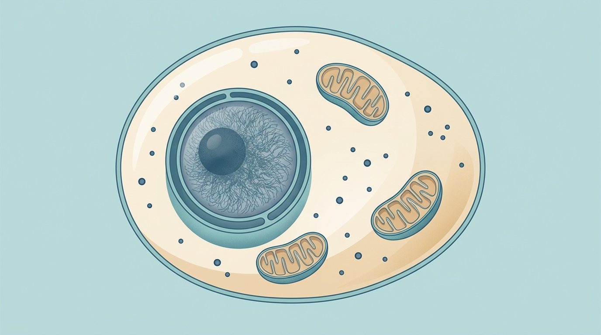
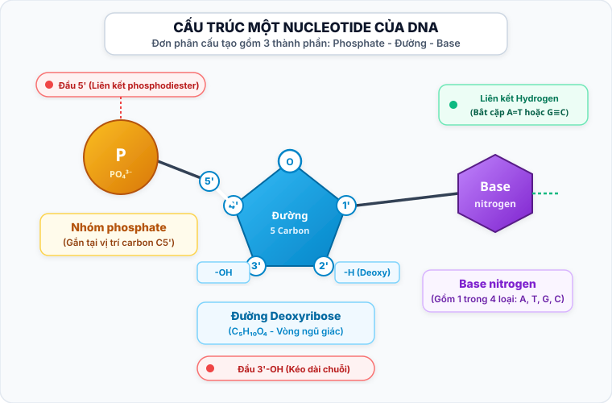
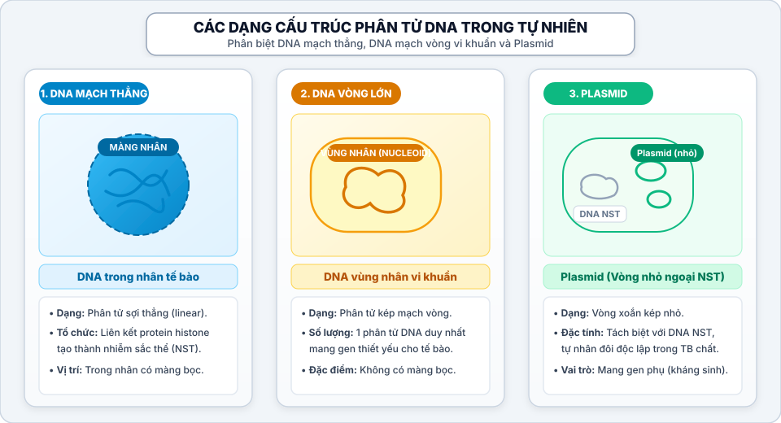
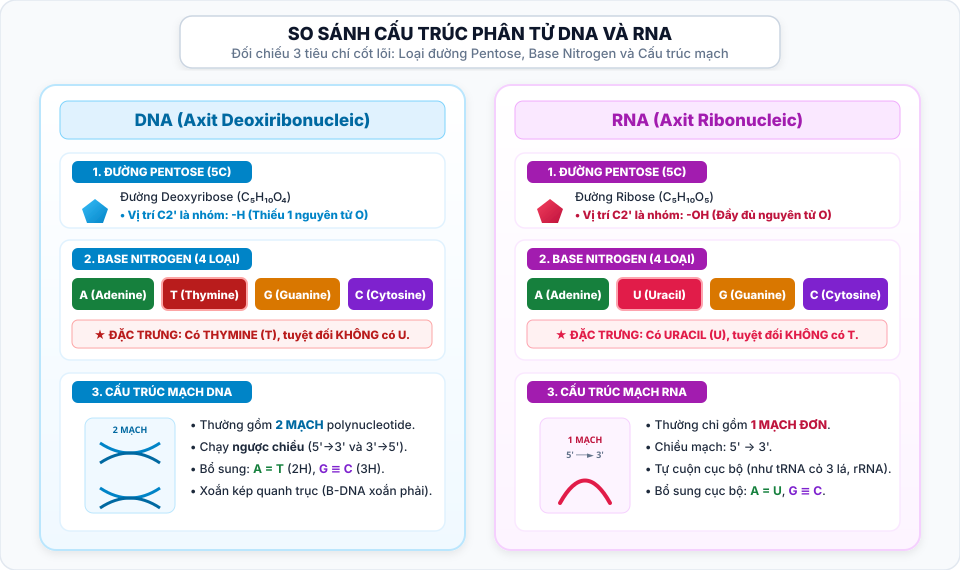
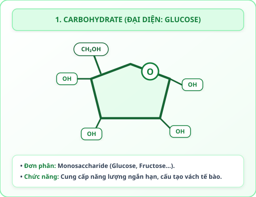
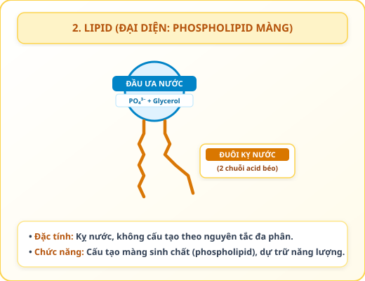
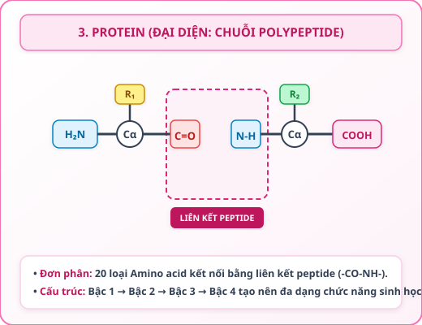
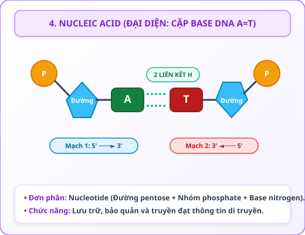

Trình tự amino acid quyết định cấu trúc và chức năng của protein. Nhưng tế bào dựa vào thông tin nào để sắp xếp các amino acid theo đúng trình tự?
1. Lưu giữ
DNA
Lưu giữ & bảo quản thông tin di truyền
Phiên mã
2. Truyền đạt
RNA
Truyền đạt thông tin từ nhân ra tế bào chất
Dịch mã
3. Thực hiện
Protein
Thực hiện chức năng & biểu hiện tính trạng
Sơ đồ khái quát: DNA lưu giữ thông tin di truyền. RNA tham gia truyền đạt và thực hiện thông tin để tổng hợp protein.
Chạm vào các điểm số (1, 2, 3) trên sơ đồ tế bào cắt bổ để khám phá vị trí phân bố của DNA và RNA.

Chọn một điểm trên hình để xem thông tin chi tiết
Tế bào nhân thực có các vùng phân bố đặc thù của DNA và RNA giữa nhân và tế bào chất.
Khóa khoa học: Nucleic acid gồm DNA và RNA. Tên “acid nhân” có nguồn gốc lịch sử, nhưng nucleic acid không chỉ tồn tại trong nhân tế bào mà còn có trong ti thể, lục lạp (DNA vòng) và tế bào chất (RNA).
Câu hỏi: Nếu trình tự nucleotide trong DNA thay đổi, điều gì có thể thay đổi?
Câu hỏi trung tâm của bài học: DNA và RNA được cấu tạo như thế nào để lưu giữ, truyền đạt và thực hiện thông tin di truyền? Trước hết, hãy bắt đầu từ đơn phân cấu tạo nên nucleic acid: nucleotide.
Stage 2
Một nucleotide và một mạch DNA
Chạm chọn từng mảnh thành phần ở khay bên dưới để ghép hoàn chỉnh một nucleotide DNA:
Vị trí C5'[Nhóm Phosphate]
Trung tâm[Đường Deoxyribose]
Vị trí C1'[Base Nitrogen]
Đã hoàn thành ghép nucleotide: Một nucleotide DNA gồm: nhóm phosphate + đường deoxyribose + một base nitrogen.

1. Thành phần nào mang tính đặc trưng A, T, G hoặc C?
Nối thành mạch polynucleotide:
Các nucleotide nối nhau ở khung đường – phosphate. Liên kết giữa các nucleotide trong cùng một mạch là liên kết phosphodiester (được hình thành giữa nhóm phosphate của nucleotide sau với nhóm -OH ở vị trí carbon 3' của đường deoxyribose thuộc nucleotide trước).
Chiều của mạch polynucleotide:
5′ đầu phosphate tự do→Đường - Phosphate→3′ đầu -OH tự do
Mỗi mạch polynucleotide có chiều xác định (5′ → 3′).
2. Khung chính của một mạch DNA gồm thành phần nào lặp lại?
Text chốt Stage 2: Nucleotide DNA gồm phosphate, deoxyribose và một base. Các nucleotide nối bằng liên kết phosphodiester tạo mạch polynucleotide có chiều xác định. Text chuyển: Một phân tử DNA điển hình không chỉ có một mạch mà gồm hai mạch liên kết với nhau.
Stage 3
Hai mạch đối song song tạo DNA xoắn kép
Hai mạch đối song song:
Mạch 1: 5′ ─── A ─── T ─── G ─── C ─── 3′
Mạch 2: 3′ ─── T ─── A ─── C ─── G ─── 5′
Hai mạch DNA đối song song (một mạch chạy theo chiều 5′ → 3′, mạch đối diện chạy theo chiều ngược lại 3′ → 5′).
Chạm chọn nucleotide bổ sung (A, T, G, C) để ghép với mạch mẫu theo đúng nguyên tắc bổ sung và đối song song:
Mạch mẫu: 5′–A–T–G–C–3′
5'
A
T
G
C
3'
••
••
•••
•••
Mạch bổ sung: 3′–T–A–C–G–5′
3'
?
?
?
?
5'
Liên kết giữa hai mạch và trong từng mạch:
• A–T có hai liên kết hydrogen.
• G–C có ba liên kết hydrogen.
Phân biệt hai loại liên kết:
- Liên kết phosphodiester nằm trong một mạch (nối các nucleotide theo chiều dọc).
- Liên kết hydrogen nằm giữa hai mạch (kết nối các base theo nguyên tắc bổ sung).
1. Cặp base nào có ba liên kết hydrogen?
Màn 3D – Tạo xoắn kép (Mô hình B-DNA):
Hai mạch đối song song → Base quay vào trong → Khung đường – phosphate ở ngoài → Hình thành DNA xoắn kép
Khóa hình xoắn kép: xoắn phải; đường kính đồng đều (2 nm); không phình – thắt; cặp base nằm trong; khung đường – phosphate nằm ngoài. Mỗi chu kỳ xoắn gồm 10 cặp nucleotide (dài 3,4 nm).
2. Trong DNA mạch kép, nhận định nào đúng?
Text khóa: Kết luận này áp dụng cho DNA mạch kép. (Tổng số A + G = T + C, tỉ số (A+T)/(G+C) mang tính đặc trưng cho loài).
Text chốt Stage 3: DNA gồm hai mạch đối song song liên kết theo nguyên tắc bổ sung. A ghép T, G ghép C. Hai mạch xoắn quanh cùng một trục tạo cấu trúc xoắn kép.
Stage 4
Cấu trúc DNA giúp lưu giữ và truyền thông tin
Hướng dẫn học tập: Quan sát sự khác biệt về trật tự nucleotide giữa 2 đoạn DNA mẫu dưới đây (cùng độ dài 6 cặp base), sau đó trả lời 2 câu hỏi trắc nghiệm để tìm hiểu cơ chế DNA lưu giữ và sao chép truyền đạt thông tin di truyền.
Màn 4A – Đối chiếu hai đoạn DNA có cùng số nucleotide nhưng khác trình tự:
Đoạn 1:5′–ATGCAG–3′(Trình tự 1)
Đoạn 2:5′–CGATGA–3′(Trình tự 2)
Nhận xét: Dù cùng có 6 nucleotide, nhưng trật tự sắp xếp khác nhau sẽ tạo nên các thông điệp di truyền hoàn toàn khác nhau.
1. Hai đoạn DNA có chứa cùng thông tin không?
Khẳng định cốt lõi: Thông tin di truyền được thể hiện trong trình tự nucleotide.
Màn 4B – Hai mạch bổ sung và sao chép:
Khi DNA được sao chép, mỗi mạch có thể làm khuôn để tạo mạch bổ sung mới theo nguyên tắc bổ sung (A liên kết với T, G liên kết với C). Nhờ đó, thông tin di truyền được nhân đôi chính xác qua các thế hệ tế bào.
Text khóa: Chỉ giới thiệu nguyên tắc khái quát; cơ chế chi tiết sẽ được học ở phần Di truyền học.
2. Vì sao nguyên tắc bổ sung giúp truyền thông tin?
Màn 4C – Dòng thông tin từ DNA đến Protein:
DNA → mRNA → Protein
DNA chứa thông tin quy định trình tự amino acid của protein. Thông tin từ DNA được phiên mã thành RNA. mRNA được dùng làm khuôn để tổng hợp protein.
Text chốt Stage 4: Trình tự nucleotide giúp DNA lưu giữ thông tin. Hai mạch bổ sung giúp thông tin có thể được sao chép và truyền lại. RNA tham gia đưa thông tin đó vào quá trình tổng hợp protein.
Stage 5
Hình thái DNA và dấu vân tay DNA

Ba hình thái DNA phổ biến:
• DNA thẳng: thường gặp trong nhân tế bào nhân thực.
• DNA vòng: thường gặp ở ti thể, lục lạp và nhiều sinh vật nhân sơ.
• Plasmid: DNA ngoài nhiễm sắc thể; có thể mang gene tạo lợi thế (như gene kháng kháng sinh ở vi khuẩn).
Text khóa: Không trình bày mọi sinh vật nhân sơ đều chỉ có một DNA vòng.
Plasmid là gì?
Hướng dẫn phân tích hồ sơ DNA (Bản gel điện di):
• Bước 1: Chạm lần lượt vào 4 vạch băng màu vàng nét đứt ở cột Người con.
• Bước 2: Quan sát hệ thống tự động dò tìm đối chiếu: vạch nào nhận từ Mẹ (chuyển màu hồng) và vạch nào bắt buộc nhận từ Cha (chuyển màu xanh dương).
• Bước 3: So sánh kết quả xem Người A hay Người B mang đầy đủ các vạch màu xanh bắt buộc để xác định người cha huyết thống.
BẢN GEL ĐIỆN DI HUYẾT THỐNG
Tiến độ: 0/4 vạch đã kiểm tra
Mẹ
Con (Chạm vạch)
Người A
Người B
Vạch 1 (30px): Chưa kiểm tra
Vạch 2 (70px): Chưa kiểm tra
Vạch 3 (90px): Chưa kiểm tra
Vạch 4 (130px): Chưa kiểm tra
Kết quả phân tích hồ sơ DNA:
• Băng 30px và 90px của Con trùng khớp với Mẹ (di truyền từ Mẹ).
• Băng 70px và 130px của Con không có ở Mẹ, bắt buộc phải nhận từ Cha.
• Đối chiếu: Người B mang đầy đủ cả hai băng 70px và 130px → Xác định Người B là cha huyết thống. Nguyên tắc: Những băng của con không có ở mẹ phải tìm thấy ở người cha.
Text khóa: Ngoài thực tế, xét nghiệm huyết thống phân tích nhiều vị trí DNA và đánh giá xác suất. Không kết luận từ một băng DNA riêng lẻ.
Màn 5C – Ứng dụng dấu vân tay DNA:
Hồ sơ DNA tại nhiều vị trí biến đổi có khả năng phân biệt cá thể rất cao. Ứng dụng:
- xác định huyết thống;
- nhận dạng nguồn gốc mẫu sinh học (truy tìm tội phạm, xác định danh tính nạn nhân...).
Text khóa: Sinh đôi cùng trứng thường có hồ sơ DNA rất giống nhau ở các vị trí nhận dạng thông thường.
Text chốt Stage 5: Sự khác nhau về trình tự DNA được ứng dụng trong xác định huyết thống và truy tìm nguồn gốc mẫu sinh học.
Stage 6
RNA – Cấu trúc và ba loại chính
Màn 6A – Cấu trúc một nucleotide RNA:
Một nucleotide RNA gồm phosphate, ribose và một base A, U, G hoặc C.
1. Base nào có trong RNA nhưng không có trong DNA?

Đối chiếu đặc điểm DNA và RNA:
DNA:
• Đường: deoxyribose
• Base: A, T, G, C
• Cấu trúc: thường hai mạch
• Vai trò: lưu giữ thông tin
RNA:
• Đường: ribose
• Base: A, U, G, C
• Cấu trúc: trong tế bào thường một mạch, có thể gấp cuộn
• Vai trò: tham gia truyền và thực hiện thông tin
Text khóa: Không nói mọi RNA trong toàn sinh giới đều chỉ có một mạch (một số virus có vật chất di truyền là RNA mạch kép).
1. mRNA (RNA thông tin):
mRNA mang thông tin từ DNA đến ribosome và làm khuôn tổng hợp protein.
Text khóa: mRNA được vẽ dạng kéo dài để dễ quan sát; phân tử thật có thể gấp cuộn ở một số vùng.
2. tRNA (RNA vận chuyển):
tRNA mang amino acid đến ribosome. Anticodon của tRNA nhận biết codon trên mRNA, giúp đưa amino acid vào đúng vị trí.
1. Cấu trúc bậc hai dạng lá chẻ ba:
Có 3 thùy cuộn tròn tạo hình lá ba chẽ, thùy giữa chứa bộ ba đối mã (anticodon).
2. Cấu trúc ba chiều dạng chữ L:
Gấp cuộn không gian 3D dạng chữ L, đầu trên mang amino acid, anticodon ở vòng dưới.
2. Dạng lá chẻ ba và dạng chữ L có phải hai loại tRNA khác nhau không?
3. rRNA (RNA ribosome):
rRNA cùng với protein tạo nên ribosome. rRNA tham gia trực tiếp vào quá trình tổng hợp protein.
Text mở rộng: rRNA ở trung tâm xúc tác của ribosome tham gia hình thành liên kết peptide.
Hướng dẫn 2 bước nối vai trò RNA:
• Bước 1: Chạm chọn 1 thẻ vai trò ở khay bên dưới (thẻ sẽ sáng viền xanh lá).
• Bước 2: Chạm vào ô loại RNA tương ứng ở trên (mRNA, tRNA hoặc rRNA) để ghép cặp. (Mỗi loại RNA có cấu trúc và chức năng đặc thù phối hợp trong tổng hợp protein).
mRNA
[Chạm để chọn ô này hoặc ghép thẻ]
tRNA
[Chạm để chọn ô này hoặc ghép thẻ]
rRNA
[Chạm để chọn ô này hoặc ghép thẻ]
Text chốt Stage 6: RNA trong tế bào thường là mạch đơn nhưng có thể gấp cuộn. mRNA, tRNA và rRNA có cấu trúc khác nhau và phối hợp trong quá trình tổng hợp protein.
Stage 7
Tổng kết nucleic acid và toàn Bài 5
Màn 7A – Mối quan hệ cấu trúc và vai trò:
DNA:
hai mạch bổ sung + trình tự nucleotide
→ lưu giữ và truyền thông tin di truyền.
RNA:
thường một mạch, có thể gấp cuộn, nhiều dạng cấu trúc
→ tham gia truyền và thực hiện thông tin.
Đặc điểm nào của DNA giúp thông tin được sao chép?
Trả lời câu hỏi trung tâm: DNA và RNA được cấu tạo như thế nào để lưu giữ, truyền đạt và thực hiện thông tin di truyền?
Sắp xếp theo thứ tự logic đúng của dòng thông tin:
Phản hồi đúng: Nucleic acid lưu giữ, truyền đạt và tham gia thực hiện thông tin di truyền.
Màn 7C – Tổng kết 4 nhóm phân tử sinh học (Bài 5):

Carbohydrate
→ cung cấp năng lượng, dự trữ năng lượng, tạo cấu trúc

Lipid
→ dự trữ năng lượng, tạo màng, tham gia điều hòa

Protein
→ nhiều chức năng nhờ cấu trúc không gian đặc hiệu

Nucleic acid
→ lưu giữ, truyền đạt và thực hiện thông tin di truyền
Bốn nhóm phân tử sinh học không hoạt động tách rời mà phối hợp tạo nên và duy trì sự sống.
Màn 7D – Câu chốt toàn bài:
Cấu trúc đặc trưng của mỗi nhóm phân tử sinh học quyết định vai trò của chúng trong tế bào.
Carbohydrate, lipid, protein và nucleic acid phối hợp với nhau để tạo nên cấu trúc, cung cấp năng lượng, điều hòa hoạt động và duy trì thông tin di truyền của sự sống.
Câu chốt module: DNA được cấu tạo từ các nucleotide, gồm hai mạch đối song song liên kết theo nguyên tắc bổ sung. Trình tự nucleotide giúp DNA lưu giữ thông tin di truyền. RNA trong tế bào thường là mạch đơn, có nhiều dạng cấu trúc và tham gia truyền, thực hiện thông tin để tổng hợp protein.
Xuất Sắc Hoàn Thành Bài Học!
Bạn đã hoàn thành trọn vẹn 7 chặng học tập về Nucleic acid – DNA và RNA, nắm vững cấu trúc phân tử, nguyên tắc bổ sung và liên kết thông tin di truyền trong sự sống.